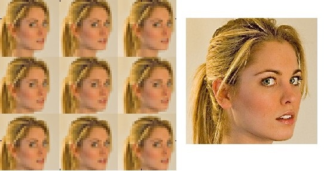

Ideas for Improvement
The goal of this project was to blend images of the same scene at different times. The results of this project were satisfactory, but there could be further improvements. One of the flaw of the output images was that the size was slightly reduced in the creation and collapsing of the pyramids. This can be corrected using Image Super-Resolution to obtain a higher resolution of the output image, then the original size can be attained.
